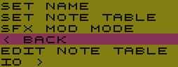
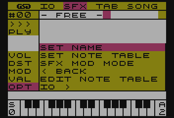
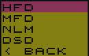
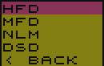
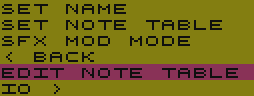
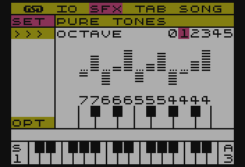
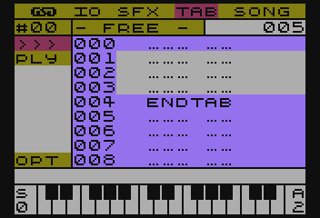

SFX MUSIC MAKER (aka SFX-TRACKER)
To program na 8-bitowe komputery ATARI pozwalający tworzyć melodie, które później można wykorzystać w innych produkcjach.
Do odtwarzania dźwięków oraz melodi, wykorzystany jest autorski silnik dźwiękowy o nazwie SFX-Engine
INSTRUKCJA OBSŁUGI PROGRAMU
SFX MUSIC MAKER (aka SFX-TRACKER)INSTRUKCJA OBSŁUGI PROGRAMUWymaganiaUruchomieniePrawdziwy sprzętEmulatorPodstawy obsługiSterowanieModuł GSDTHEMESAVE DEFAULTLOAD THEMEModuł IOLOAD/SAVENEWQUITModuł SFXJak powstaje SFX?Tworzenie SFXaMenu modułu SFXObszar edycjiTryb edycji SFXMenu funkcji modulacjiTryb pianinaOpcje SFXSET NAMESET NOTE TABLESET MOD MODEEdycja Tablic NutTryb edycji Tablic NutOpcje Tablic nutIOLOADSAVEModuł TABCechy charakterystyczne dla TABówCo piszczy w module TAB?Lista TABówEdycja TABówOdtwarzanie TABaFunkcje TABWprowadzanie funkcjiTABENDREPEATNOTE VALUENOTE OFFSchowekModuł SONGRodzaje modulacjiCo one oznaczają?HFD - High Frequency DividerMFD - Middle Frequency DividerLFD - Low Frequency DividerNLM - Note Level ModulationDSD - Direct Set DividerCo kryje się pod pojęciami: dzielnik częstotliwości oraz modulacja?Dzielnik częstotliwościModulacjaFunkcje MOD/VALHigh Frequency DividerMiddle Frequency DividerLow Frequency Divider/Note Level ModulationDirect Set DividerWażne rzeczyZapis wartości ujemnejSzczegóły techniczne SFX ENGINEJądro silnikaTablica skokówSFX_INIT (offset +0)SFX_MAIN_TICK (offset +3)SFX_PLAY_NOTE (offset +6)SFX_PLAY_TAB (offset +9)SFX_PLAY_SONG (offset +12)SFX_OFF_CHANNEL (offset +15)SFX_OFF_ALL (offset +18)Wykorzystanie pamięci przez silnik SFXRejestry sprzętoweWażne sprawyWłasne rozszerzenia silnika SFXSekcje modulatoraRejestry programoweRejestry na stronie zerowejRejestry tymczasoweRejestry kanałówBiblioteka SFX_Engine dla MAD PascalStałePlik konfiguracyjny sfx_engine.conf.incStałe pliku konfiguracyjnegoAUDIO_BUFFER_ADDRSFX_REGISTERSSFX_CHANNELS_ADDRSONG_ADDRSFX_MODE_SET_ADDRSFX_NOTE_SET_ADDRNOTE_TABLE_PAGESFX_TABLE_ADDRTAB_TABLE_ADDRZmienneSONGDataSFXModModeSFXNoteSetOfsSFXPtrTABPtrSONG_TempoSONG_TickSONG_OfsSONG_RepCountchannelsProcedury i funkcjeINIT_SFXEngineSFX_StartSFX_ChannelOffSFX_OffSFX_NoteSFX_FreqSFX_PlayTABSFX_PlaySongSFX_EndDostosowanie silnika SFXEtykiety kompilacji warunkowejSFX_SWITCH_ROMSFX_previewChannelsSFX_SYNCAUDIOOUTUSE_MODULATORSTryb pracy bez sekcji modulatorówFORMAT PLIKU SMMZałożenia formatu pliku:Sekcja głównaSekcja definicji SFXSekcja Tablicy nutSekcja definicji TABSekcja definicji SONG
Wymagania
Do prawidłowej pracy wymagany jest:
- mikrokomputer ATARI z procesorem 6502 (lub kompatybilnym)
- 64 KB pamiƒôci RAM
- Stacja dysków lub inny napęd, pozwalający na swobodny dostęp do danych
- Dyskietka z programem lub obraz dyskietki
- Zapoznanie siƒô instrukcjƒÖ
- S≈Çuch muzyczny i chƒôci do tworzenia üòÑ
Program można też uruchomić na emulatorze tego mikrokomputera. Do tego celu wymagany jest obraz dysketki oraz zainstalowany i skonfigurowany program emulatora.
Uruchomienie
Prawdziwy sprzƒôt
TO DO
Emulator
TO DO
Podstawy obsługi
Pisząc SFXMM dążyłem przede wszystkim do prostej i czytelnej obsługi. Stąd moduły są do siebie podobne w wyglądzie jak i obsłudze.
Sterowanie
Generalnie, wybór opcji w programie odbywa się za pomocą klawiszy kursora (strzałek) i jest (mam nadzieję) bardzo intuicyjne, a ich akceptacja odbywa się klawiszem RETURN
Z opcji można wyjść używając klawisz ESC.
W listach można się szybko przemieszczać o ilości elementów listy widocznych na ekranie, trzymając klawisz CONTROL oraz używając klawiszy strzałek.
Moduł GSD
THEME
W tym miejscu można wybrać schemat kolorystyczny z listy sześciu domyślnie wczytanych przy uruchamianiu programu. Lista schematów mieści się w pliku DEFAULTH.EME.
TO DO
SAVE DEFAULT
Zapisuje aktualny zestaw tematów wraz z aktualnie wybranym na urządzeniu zewnętrznym.
Zapis odbywa się do pliku o nazwie DEFAULTH.EME . Użytkownik zostanie poproszony o potwierdzenie nadpisania tego pliku.
LOAD THEME
Pozwala wczytać zestaw tematów kolorystycznych z urządzenia zewnętrznego.
Moduł IO
TO DO
LOAD/SAVE
TO DO
NEW
TO DO
QUIT
TO DO
Moduł SFX
Na początku był efekt dżwiękowy (BOOM) :D Tak można by spekulować, po wnioskach naukowców w kwestii wielkiego wybuchu, który stworzył Nasz wszechświat ;)
Początki Music Makera sięgają silnika SFX, który powstał na potrzeby udźwiękowienia gry pisanej w Turbo Basicu. To właśnie tu powstała "zupa pierwotna", która ewoluowała do SFX Music Maker.
Popularnie nazywane Instrumentem, jednak jest to po prostu efekt dźwiękowy, a dokładniej, szereg definicji składających się na końcowy efekt, jakim jest słyszany dźwięk, czyli SFX.
Jak powstaje SFX?
Definicję SFXa opisują trzy składowe:
VOL- natężenie - to nic innego, jak głośność, a bardziej fachowo to amplituda dźwięku, a jeszcze bardziej fachowo, to wypadkowa amplitudy dźwiękuDST- zniekształcenie - układ dźwiękowy POKEY oferuje kilka rodzajów zniekształceń, jakie może generować. Zapoznaj się z pełnymi możliwościami POKEYaMOD/VALmodulacja - pozwala sterować odtwarzaniem SFXa oraz zmieniać jego częstotliwość. Ten parametr jest szerzej opisany w sekcji Rodzaje modulacji
Każdy z nich, opisuje jeden krok obwiedni SFXa (patrz rysunek poniżej) Tych kroków można zdefiniować do 128.

Tworzenie SFXa
W menu głównym, widnieje opcja SFX. Jest to moduł odpowiadający za tworzenie dzięków.
Po wybraniu tej opcji otwiera siƒô widok edytora.
Menu modułu SFX

Po lewej stronie znajduje się pasek menu (zdjęcie powyżej), w którym umieszczone są najistotniejsze opcje.
Pierwszą z nich jest numer aktualnie wybranego SFXa #00. Korzystając z klawiszy strzałek LEWO/PRAWO, można sekwencyjnie go zmieniać. Naciskając klawisz RETURN otworzy się lista ze wszystkimi (również niezdefiniowanymi) SFXami. Gwiazdka przy nazwie SFXa oznacza, że SFX jest zdefiniowany.
Obok numeru SFXa znajduje się jego nazwa. Poniżej tej opcji umieszczone są kolejno:
>>>- przejście do trybu edycjiPLY- przejście do trybu pianinaVOL,DST,MOD,VAL- pozwalają szybko przejść do edycji składowej SFXaOPT- zawiera opcje konfiguracyjne SFXa
Obszar edycji

Po prawej stronie paska menu SFX, widnieje obszar edycji. ZnajdujƒÖ siƒô w nim:
- widok na obwiednie SFXa (obwiednia jest wizualizacją wartości składowej
VOL) - składowe definicji
VOL,DST,MOD,VAL. - Linia informacyjna (rysunek poniżej) która zawiera:

HFD- tryb modulacji zastosowany dla SFXa000- aktualna pozycja kursora edycji128- długości definicji SFXa
Tryb edycji SFX
Po przejściu do trybu edycji, rzeczą na którą należy zwrócić uwagę przy wprowadzaniu zmian, jest aktualnie wybrana składowa edycji, tzn: VOL, DST, MOD, VAL. Zmianę składowej można dokonać naciskając klawisze strzałek GÓRA/DÓŁ.
Aby ustawić żądaną wartość składowej, można posłużyć się dwoma metodami:
- Przytrzymując klawisz CONTROL, użyć klawiszy strzałek GÓRA/DÓŁ. Dokonamy sekwencyjnego wyboru wartości danej składowej w przedziale od
0doF(tj. od 0 do 15 - zapis tej wartości odbywa się systemie heksadecymalnym) - Można również, szybko podać konkretną wartość, naciskając klawisze numeryczne od
0do9oraz klawiszeAdoF(które odpowiadają wartością od 10 do 15)
Przemieszczanie kursora edycji odbywa się za pomocą klawiszy strzałek LEWO/PRAWO i w ten sposób przemieszamy kursor o jedną pozycję (stosownie do kierunku). Jest też możliwość szybkiego przemieszczania się w obrębie definicji. W tym celu należy nacisnąć dodatkowo klawisz CONTROL wraz z kierunkiem przemieszczenia. Pozycja kursora będzie ulegała zmianie (stosownie do kierunku) o szerokość ekranu, tj. 16 punktów definicji SFXa widocznych na ekranie edycji.
[dodano w wersji RC2] W trybie edycji można też zmieniać aktualnie edytowany SFX, bez konieczności wychodzenia. W tym celu, należy przytrzymać klawisz SHIFT i użyć strzałek LEWO/PRAWO.
[dodano w wersji RC2] Kombinacje klawiszy CONTROL oraz X/C/V pozwalają korzystać ze schowka, więcej na ten temat w sekcji Schowek
Menu funkcji modulacji
W trybie edycji SFXa, składowe MOD/VAL zawierają informacje sterujące dla silnika SFX. Nie jest wymagana znajomość kodów, gdyż dostępne jest wygodne menu z listą funkcji. Dostęp do tego menu umożliwia wciśnięcie klawisza RETURN (bez względu na aktualnie wybraną składową definicji)
Lista ta, będzie się różnić w zależności od trybu modulacji.
| Tryb | DSD | HFD | MFD | NLM |
|---|---|---|---|---|
| Pełna nazwa | Direct Set Divide | High Frequency Divider | Middle Frequency Divider | Note Level Modulator |
| Funkcje | FREQ SET | STOP SFX | STOP SFX | STOP SFX |
BACK > | FREQ SHIFT | JUMP TO | JUMP TO | |
< EXIT | NOP | FREQ SHIFT | FREQ SHIFT | |
BACK > | NOP | NOTE SHIFT | ||
< EXIT | BACK > | NOP | ||
< EXIT | BACK > | |||
< EXIT |
Znaczenie poszczególnych funkcji jest następujące:
FREQ SET- ustawia wartość dzielnika częstotliwości w zakresie 0 do 255STOP SFX- kończy przetwarzania SFXaJUMP TO- wykonuje skok w obrębie SFXa (zapętla go)FREQ SHIFT- zmienia względnie wartość dzielnika częstotliwości*NOTE SHIFT- zmienia względnie nutę o ilość półtonówNOP- No OPeration - brak operacji na SFXieBACK >- powrót do edycji SFXa< EXIT- wyjście z trybu edycji.
* - zakres zmian zależny jest od wybranego trybu modulacji. Więcej na ten temat dowiesz się z Rodzaje modulacji
Automatycznie zaznaczana jest opcja, która jest w miejscu kursora edycji i ma to na celu, ułatwienie dokonywania zmian wartości aktualnej funkcji. Wystarczy wcisnąć dwa razy klawisz RETURN.
Po wybraniu jednej z opcji, wy≈õwietlony zostanie monit w linii statusu o podanie warto≈õci dla wybranej funkcji - zakres tej warto≈õci zostanie wy≈õwietlony na ekranie.

Po zaakceptowaniu klawiszem RETURN, program przetworzy wprowadzone informacje do składowych MOD/VAL.
Tryb pianina
W tym trybie można przetestować stworzony dźwięk. Klawisze odpowiadające nutom rozłożone są na klawiaturze komputera zgodnie z poniższym rysunkiem:

Dodatkowo, za pomocą klawisza TAB lub SHIFT-TAB można zmieniać oktawę bazową, a naciskając klawisz INVERS zmienimy tryb pracy pianina pomiędzy Single-Tone a Multi-Tone (bardziej kojarzony z Polifonią)
Tryb Multi-Tone charakteryzuje się odtwarzaniem dźwięku kolejno na kanałach 0, 1, 2, 3, 0, 1, 2... itd.
Aktualny tryb oznaczony jest literą S lub M po lewej stronie wizualizacji piania, tuż na cyfrą określającą bazową oktawę. Po przeciwnej stronie, znajduje się literowy wskaźnik (A,B,C,D) pokazujący zastosowaną tabele nut, a pod nim, cyfra określająca końcową oktawę.
Wyj≈õcie z trybu pianina nastƒôpuje po naci≈õniƒôciu klawisza ESC
Opcje SFX
W pasku menu, pod skrótem OPT, ukryte są opcje związane z ustawieniami aktualnie edytowanego SFXa.

SET NAME- zmiana nazwy SFXaSET NOTE TABLE- ustawienie tablicy nut dla SFXaSFX MOD MODE- ustawienie trybu modulacji dla SFXa< BACK- wyjście z opcjiEDIT NOTE TABLE- otwiera moduł edycji tablic nut (patrz sekcja Edycja Tablic Nut)IO >- operacje dyskowe
SET NAME
SET NAME, pozwala nadać nazwę dla aktualnie edytowanego SFXa. Nazwa może mieć maksymalnie 14 znaków. Nazwy nie podlegają weryfikacji pod kątem już istniejących (występujących) nazw.

SET NOTE TABLE
Każdej definicji SFX można przypisać jedną z czterech tablic nut (więcej o tablicach nut w sekcji Edycja Tablic Nut)
Po wybraniu tej opcji, otworzy siƒô lista z nazwami tablic.


SET MOD MODE
Podobnie jak tablice nut, dla każdego SFXa można przypisać tzw. tryb modulacji (więcej na ten temat w sekcji Rodzaje modulacji)
Po wejściu w opcję, otwiera się lista ze skrótami trybów.
 

Po otwarciu listy, zaznaczony zostanie tryb modulacji, jaki jest ustawiony dla aktualnie edytowanego SFXa.
UWAGA! Zmiana trybu nie konwertuje definicji SFXa do wybranego trybu. Należy wykonać ją samodzielnie. Odtworzenie niedostosowanego SFXa może prowadzić do nieokreślonego zachowania się programu, włącznie z jego zawieszeniem.
Edycja Tablic Nut
Ten moduł odpowiedzialny jest za dostosowanie tablic nut.
Tablica nut - to zestaw wartości opisujących częstotliwość (dzielnik częstotliwości) dla każdej nuty. Dzięki tablicom, można dostroić brzmienie dźwięku.

Po lewej stronie znajduje siƒô pasek menu, a w nim:
SET- wybór edytowanej tablicy nut>>>- przejście do trybu edycjiOPT- opcje modułu
Tryb edycji Tablic Nut
Obszar roboczy tego trybu zawiera (kolejno od góry)
- Aktualnie wybranƒÖ oktawƒô
- Wska≈∫niki precyzyjnego dostrojenia nuty
- Wartość zgrubna dostrojenia nuty (zapisna szesnastkowo)
W tym trybie wykorzystany jest tryb piania, tzn. klawiszami można wybrać edytowaną nutę, jednocześnie zostanie odtworzony dźwięk (aktualnie wybranego SFXa)
Wyboru nuty można też dokonać naciskając klawisze strzałek LEWO/PRAWO wybierając sekwencyjnie nuty - w tym przypadku dźwięk SFXa nie zostanie odtworzony.
Strojenie odbywa się za pomocą klawiszy strzałek GÓRA/DÓŁ - przy zmianie wartości dzielnika częstotliwości nie jest odtwarzany dźwięk SFXa.
Wyj≈õcie z trybu edycji nastƒôpuje po naci≈õniƒôciu klawisza ESC
Opcje Tablic nut
W menu OPT zawarte są opcje umożliwiające:
SET TABLE NAME- zmiana nazwy tablicy< BACK- wyjście z opcjiIO- operacje dyskoweLOADorazSAVEpozwalające odpowiednio: wczytać lub zapisać definicję tablicy nut, wykorzystując do tego celu urządzenie zewnętrznę. Postępowanie w przypadku użycia tych opcji jest dokładnie takie samo jak dla opcjiSFX->IO
IO
LOAD
Pozwala wczytać definicję SFXa z urządzenia zewnętrznego. W tym celu, należy podać nazwę urządzenia oraz nazwę pliku, zawierającą definicję, np. D:PIANO.SFX
Nazwę można też wybrać z katalogu dysku, do którego dostęp uzyskamy wpisując nazwę urządzenia, np: D:. Można też wprowadzić znaki uniwersalne (tzw. wildcards) które pozwolą zawęzić listę do, np. konkretnych rozszerzeń, np. D:*.SFX, D:A*.*, itp.
SAVE
Pozwala zapisać zdefiniowany SFX na urządzeniu zewnętrznym. Zasady postępowania w tej opcji są takie same jak dla IO>LOAD
Moduł TAB
W świecie trackerów, znane jako Pattern i pełnią dokładnie tą samą funkcję. Zawierają nuty i instrukcje opisujące jedną ścieżkę dźwiękową utworu. Dzięki takiemu podejściu, utwór może być bardziej skomplikowany i jednocześnie zajmować mniej miejsca.
Cechy charakterystyczne dla TABów
Podstawową cechą w odróżnieniu od większości (znanych mi) Trackerów - gdzie patterny mają przeważnie stałą długość - TABy mogą mieć długość od 1 do 128 nut.
Tak, wiem, potężny i naprawdę świetny Raster Music Tracker pozwa na zdefiniowanie do 256 nut, ale ta funkcjonalność bardziej pasuje do FUTURE COMPOSERa, gdzie każdy Pattern może mieć swoją własną długość.
Dodatkowo mogą też być zapętlane na dwa sposoby: funkcją skoku bezpośredniego i funkcją powtórzenia, a wszystko to wewnątrz TABa.
Kolejną cechą charakterystyczną jest, możliwość używania nie tylko nut, ale i także wartości dzielnika częstotliwości.
Inną cechą, której nie spotkałem w innych, znanych mi programach typu Tracker, jest możliwość nazywania TABów. Tak, w SFXMM można je nazw
Szerszy opis funkcji TAB znajdziesz w sekcji Funkcje TAB
Co piszczy w module TAB?
SFX Music Maker, pozwala na zdefiniowanie do 64 niepowtarzalnych TABów, z których każdy możesz nazwać, aby się nie pogubić :F
Widok modułu TAB jest bardzo prosty i przedstawia się następująco:

Po lewej stronie ekranu widnieje pasek menu, a w nim, pierwszą pozycją jest numer aktualnie wybranego TABa i tuż obok, jest jego nazwa. Zaraz za nazwą, jest informacja o długości aktualnego TABa.
Pod numerem TABa, sƒÖ nastƒôpujƒÖce opcje:
>>>- przechodzi do trybu edycji TABaPLY- odtworzenie TABaOPT- tu kryje siƒô opcja ustawienia nazwy TABa
Przemieszczanie pomiędzy poszczególnymi opcjami menu, odbywa się za pomocą klawiszy strzałek GÓRA/DÓŁ, a wyboru opcji dokonasz klawiszem RETURN.
Lista TABów
Będąc kursorem na numerze aktualnego TABa (pasek menu TAB), klawiszami strzałek LEWO/PRAWO można zmieniać numer, jednocześnie mając podgląd na fragment definicji TABa w obszarze edycji.
Naciskając klawisz RETURN pokazana zostanie lista wszystkich TABów, wraz z nazwami. Gwiazdką obok nazwy zostaną oznaczone te TABy, które zawierają treść. Wyboru dokonasz przemieszczając się klawiszami strzałek GÓRA/DÓŁ. Akceptacja wyboru odbywa się klawiszem RETURN.
Edycja TABów
Do trybu edycji przejdziesz wybierajƒÖc opcjƒô >>> i naciskajƒÖc klawisz RETURN.
Kursor wskazuje na aktualnie edytowany wiersz TABa, a jego przemieszczanie odbywa się za pomocą klawiszy strzałek GÓRA/DÓŁ lub CONTROL+GÓRA/DÓŁ
Wprowadzanie nut odbywa się za pośrednictwem wirtualnego pianina, którego zasada działania została opisana w sekcji SFX - Tryb pianina
Klawiszami strzałek LEWO/PRAWO można zmienić aktualnie używany SFX, a informacja o nim ukaże się w linii statusu (nad wizualizacją pianina)
[Zmiana w wersji RC2] Trzymając SHIFT i używając strzałek LEWO/PRAWO można przełączać aktualnie edytowany TAB, a SHIFT+RETURN pozwala wybrać z listy TAB do edycji.
Klawisz RETURN otwiera menu Funkcji TAB opisane w nastƒôpnej sekcji.
[Dodano w wersji RC2] Klawisze CONTROL+P pozwalają odtworzyć zawartość TABa od miejsca w którym znajduje się kursor.
[dodano w wersji RC2] Kombinacje klawiszy CONTROL oraz X/C/V pozwalają korzystać ze schowka, więcej na ten temat w sekcji Schowek
Wyjście z edycji umożliwia klawisz ESC
Odtwarzanie TABa
Opcja PLY pozwala na odtworzenie zawarto≈õci aktualnego TABa.
W trakcie jego grania, użytkownik może również używać wirtualnego pianina, jednak w tym trybie nie będzie funkcjonować polifonia.
Wybranie opcji PLY z menu bocznego odtworzy TAB od początku w niekończącej się pętli. Aby przerwać odtwarzanie, wystarczy wcisnąć sklawisz ESC.
[Dodano w wersji RC2] W trybie edycji TABa, naciśnięcie klawiszy CONTROL+P pozwoli odtworzyć zawartość TABa od miejsca w którym znajduje się kursor edycji.
Funkcje TAB
Funkcje TAB to jedna z cech charakterystycznych SFX Music Makera (patrz sekcja Cechy charakterystyczne dla TABów)
Każdy TAB może być definiowany z użyciem następujących funkcji:
- nuty - to raczej nie ulega wątpliwości, najważniejsza funkcja w TABie :D
TABEND- pozwala na zakończenie TABa w dowolnym miejscuREPEAT- funkcja powtórzeniaNOTE VALUE- tą funkcją też można tworzyć melodię, jednak jej zapis to wartość dzielnika częstotliwości i jest dziesiętny.NOTE OFF- wyłączenie odtwarzania SFXaNOP(No OPeration) - po prostu brak operacji.

Wprowadzanie funkcji
Aby móc wstawić funkcję TABa, naciśnij RETURN, będąc w trybie edycji. Pokaże się lista dostępnych opcji, a aktualnie wybrana, będzie opcją spod kursora. Więc, aby szybko zmienić parametry funkcj,i wystarczy dwa razy wcisnąć RETURN.
Akceptując wprowadzenie funkcji, która wymaga podania parametru/ów, użytkownik będzie informowany w linii statusu o tym, jaką wartość ma wprowadzić oraz o zakresie tej wartości.
Podanie warto≈õci spoza zakresu, skutkuje ponowieniem wprowadzenia. Klawisz ESC anuluje wprowadzanie funkcji.
TABEND
Tą funkcją zakończyć można definicję TABa.
Istotną cechą stosowania funkcji TABEND jest zmniejszenie zapotrzebowania na pamięć, gdyż kończąc nią definicję TABa, określamy jego długość i ilość zużytej pamięci.
Tak wyglƒÖda w zapisie:

Jak widać na powyższym obrazku, długość (oznaczona w prawym górnym rogu) jest ustawiona na 5 wierszy, to powoduje, że TAB w pamięci zajmuje tylko 10 bajtów (po dwa bajty na linię) a nie 256 - w przypadku nie zastosowania TABEND.
REPEAT
Funkcja służąca do zapętlania.
REPEAT poprzez fakt, że oprócz miejsca skoku, zawiera dodatkowy parametr określający ilość powtórzeń, powtarzać będzie "blok" żądaną ilość razy, po czym przejdzie dalej.
WyglƒÖd w zapisie:

Po wybraniu funkcji, poproszony zostaniesz najpierw o:
- podanie ilości powtórzeń
- miejsca skoku
NOTE VALUE
Funkcja ustawiająca bezpośrednio wartość dzielnika częstotliwości układu POKEY. Pozwala to na "dostrajanie fałszujących dżwięków" lub wręcz specjalne fałszowanie.
Nie które kombinacje zniekształceń i dzielników częstotliwości generowanych przez POKEY dźwięków, ulegają dodatkowym zniekształceniom, które w efekcie mogą powodować u słuchającego wrażenie fałszowania.

Ułatwieniem w dostrajaniu jest to, że jeżeli zastosujemy tą funkcję na wierszu w której jest zapisana nuta, zostanie automatycznie podana wartość dzielnika częstotliwości odpowiadająca nucie (wartość z tabeli nut użytego SFXa), którą ostatecznie można skorygować.
Wybór tej funkcji, powoduje monit o podanie dwóch wartości:
- wartość dzielnika częstotliwości
- numer SFXa
NOTE OFF
Funkcja bezparametrowa. Powoduje wyłączenie aktualnie odtwarzanego SFXa.
TO DO: brak zdjęć
Schowek
[dodano w wersji RC2]
Każdy dobrze wie, jak pomocne bywa Kopiuj-Wklej. SFXMM też posiada taką funkcjonalność
Obsługa schowka działa tylko w trybie edycji SFXów oraz TABów i pozwala na przenoszenie lub kopiowanie całych definicji (tzn. że nie można skopiować fragmentu SFXa czy też TABa).
Zastosowna jest klawiszologia znana z komputerów PC/MAC, gdzie za operacje na schowku odpowiedzialne są następujące kombinacje klawiszy:
- CONTROL+C - kopiuje aktualnie edytowany SFX/TAB do schowka
- CONTROL+V - wkleja zawartość schowka do aktualnie edytowanego SFXa/TABa
- CONTROL+X - kopiuje edytowany SFX/TAB do schowka, kasując zawartość aktualnego SFXa/TABa
Starałem się zabezpieczyć program przed możliwością skopiowania, np. definicji SFXa do TABa, ale kto wie... może komuś się (jakimś cudem) udać taka "sztuczka"
Każda operacja na schowku jest sygnalizowana komunikatem w pasku statusu. Jeżeli schowek jest pusty, zostanie to ogłoszone komunikatem:
EMPTY CLIPBOARD
lub jeśli zawiera treść z innego modułu, pojawi się monit:
BAD CLIPBOARD DATA
UWAGA! Dane w schowku ulegnƒÖ skasowaniu przy korzystaniu z operacji IO
Moduł SONG
TO DO
Rodzaje modulacji
Jest to efekt wdrożenia inspiracji @marok, która pozwala na ustalenie dla pojedynczego SFXa w jaki sposób, będzie brana pod uwagę wartość MOD/VAL
Obrałem ten kierunek i utworzyłem definicje czterech trybów:
- HFD - High Frequency Divider
- MFD - Middle Frequency Divider
- LFD/NLM - Low Frequency Divider/Note Level Modulation
- DSD - Direct Set Divider
Co one oznaczajƒÖ?
HFD - High Frequency Divider
Szerokie spektrum modulacji dzielnika czƒôstotliwo≈õci w zakresie +/-127.
Nie ma możliwości zapętlenia SFXa
Pełna zgodność wsteczna z pierwotnym silnikiem SFX
MFD - Middle Frequency Divider
≈örednie spektrum modulacji.
Zakres modulacji +/-64 od podstawy d≈∫wiƒôku
Możliwość zapętlenia SFXa
LFD - Low Frequency Divider
Niskie spektrum modulacji.
Zakres modulacji +/-32 od podstawy d≈∫wiƒôku.
Możliwość zapętlenia SFXa
NLM - Note Level Modulation
Modulacja na poziomie nuty (pół tonów)
Zakres modulacji +/-32 pół tony w odniesieniu do nuty bazowej (tej umieszczonej w TABie)
Możliwość zapętlenia SFX
DSD - Direct Set Divider
Bezpośrednia wartość dzielnika częstotliwości.
Zakres od 0 do 255
Brak możliwości zapętlenia.
Stała, maksymalna długość SFXa (128 punktów obwiedni)
Co kryje siƒô pod pojƒôciami: dzielnik czƒôstotliwo≈õci oraz modulacja?
Dzielnik czƒôstotliwo≈õci
Jest to drugi parametr instrukcji SOUND w Basicu. Jest ona odpowiedzialna za wysokość generowanego przez POKEY dźwięku. Im ta wartość jest większa, tym częstotliwość jest niższa, zgodnie ze wzorem:
f_out - częstotliwość wyjścowaPOKEY_freq - wartość podstawy częstotliwości pracy POKEYa (danego kanału)freq_div - wartość dzielnika częstotliwości
Modulacja
Wartość dzielnika częstotliwości będzie ulegała zmianom, poprzez parametr MOD/VAL. W większości, modulacja ta odbywa się względnie, tzn. dla wartość bazowej określanej w TAB (niezależnie, czy będzie to nuta, czy też wartość bezpośrednia dzielnika) jej wartość jest zmieniana o wartość parametru MOD/VAL, która może przyjmować wartości dodatnie oraz ujemne. Ostatecznie, wartość wynikowa staje się wartością bazową.
Funkcje MOD/VAL
Dla poszczególnych rodzajów modulacji, istnieją różne formy jej zapisu i interpretacji. Najlepiej to przedstawi zapis binarny, gdzie wyraźnie widać, jakie bity odpowiadają za funkcje, a jakie za wartość.
I tak, dla:
High Frequency Divider
xxxxxxxxxx%00000000 - brak modulacji%0xxxxxxx - zwiększenie dzielnika częstotliwości o wartość określoną w bitach 'x'%1xxxxxxx - zmniejszenie dzielnika częstotliwości o wartość określoną w bitach 'x'%10000000 - koniec definicji SFX (End Of SFX)
Middle Frequency Divider
xxxxxxxxxx%00000000 - brak modulacji%00xxxxxx - zwiększenie dzielnika częstotliwości o wartość 'x'%01xxxxxx - zmniejszenie dzielnika częst. o wartość 'x'%1xxxxxxx - skok do pozycji określonej w bitach 'x' (w obrębie SFXa)%10000000 - koniec definicji SFX
Low Frequency Divider/Note Level Modulation
xxxxxxxxxx%00000000 - brak modulacji%000xxxxx - zwiększenie dzielnika częst. o wartość 'x'%001xxxxx - zmniejszenie dzielnika częst. o wartość 'x'%010xxxxx - podniesienie nuty o 'x' półtonów%011xxxxx - obniżenie nuty o 'x' półtonów%1xxxxxxx - skok do pozycji określonej w bitach 'x' (w obrębie SFXa)%10000000 - koniec definicji SFX
Direct Set Divider
xxxxxxxxxx%xxxxxxxx - wartość bezpośrednia rejestru dzielnika częstotliwości
Ważne rzeczy
Zapis warto≈õci ujemnej
Wartość ujemna musi być liczbą przeciwną, tzn.
Jest to wymagane, gdyż odejmowanie bazuje na dodawaniu liczb przeciwnych w modulo 256.
Odejmowanie to dodawanie przeciwnej liczby do wartości bazowej. Ośmiobitowy rejestr (z natury działa w modulo 256) ulega przepełnieniu (co jest to ignorowane) a pozostała wartość w tym rejestrze jest wynikiem.
Szczegóły techniczne SFX ENGINE
SFX Engine jest autorskim silnikiem muzycznym, którego głównym założeniem jest:
Jak największa elastyczność w dostosowaniu przez użytkownika przy zachowaniu optymalnej wydajności.
Napisany w całości w assemblerze dla procesorów 6502.
W tej części zapoznasz się z budową silnika oraz ze sposobami implementacji (API dla MadPascala), dzięki którym będziesz w stanie wykorzystać go we własnych programach.
Jeśli coś jest nie jasne dla Ciebie, napisz do mnie, postaram się wytłumaczyć i ewentualnie wprowadzić zmiany w dokumentacji.
e-mail: ghostsoftwaredevelopment(at)gmail.com
github: GSoftwareDevelopment/SFX-Tracker
JƒÖdro silnika
Szczegóły techniczneTo kod na który składają się:
tablica skoków
zawiera listƒô podstawowych procedur funkcjonalnych silnika
kod wykonywalny silnika
W trakcie kompilacji można ustawić adres bazowy, jednak kod nie jest relokowalny.
Tablica skoków
Wywołanie procedur odbywa się poprzez skok JSR pod adres bazowy jądra silnika z offsetem (co trzy bajty). Do procedur przekazywane są parametry za pośrednictwem rejestrów sprzętowych (A,X,Y oraz rejestr flag)
Dla przykładu, wywołanie procedury SFX_PLAY_NOTE (odtwarzającej SFX) w assemblerze to:
​x; ustawienie parametrów procedury ldx #$00 ; kanał 1 ldy #$00 ; SFX #0 lda #5 ; nuta 5 (E-0) clc ; flaga Carry skasowana - rejest A zawiera indeks nuty ; wywołanie procedury jądra jsr SFXEngine+6 ; SFXEngine zawiera adres bazowy ; pod którym znajduje się jądro silnika ​Można też pominąć tablicę skoków, wykorzystując etykietę:
xxxxxxxxxx; wywołanie procedury jądra jsr SFX_PLAY_NOTE
SFX_INIT (offset +0)
Procedura inicjujƒÖca silnik SFX. Ustawia rejestry wykorzystywane przez silnik na warto≈õci poczƒÖtkowe. Procedura nie inicjuje przerwania VBLANC.
Brak parametrów wejścowych
SFX_MAIN_TICK (offset +3)
Główna procedura przetwarzająca dane. Należy ją "podpiąć" pod przerwanie VBLANK (we własnym zakresie). Przed uruchomieniem, konieczne jest zainicjowanie silnika procedurą SFX_INIT
Brak paramertów wejściowych
Przykładowa inicjacja przerwania:
xxxxxxxxxx lda #$00 ; wyłączenie obsługi przerwania VBLANK sta NMIEN​ lda VVBLKD ; zapamiętanie wektora przerwania sta OLDVBL lda VVBLKD+1 sta OLDVBL+1​ lda <SFX_MAIN_TICK ; ustawienie wekrora przerwania sta VVBLKD lda >SFX_MAIN_TICK sta VVBLKD+1​ lda #$40 ; włączenie obsługi przerwania VBLANK sta NMIEN
SFX_PLAY_NOTE (offset +6)
Odtwarza zdefiniowany SFX na podanym kanale d≈∫wiƒôkowym o zadanej wysoko≈õci d≈∫wiƒôku.
Wysokość dźwięku określić można na dwa sposoby: poprzez nutę oraz używając dzielnika częstotliwości. Wyboru sposobu dokonuje się odpowiednio, kasując lub ustawiając flagę C (Carry - przepełnienia) przed wywołaniem procedury.
Parametry wej≈õciowe
| Rejestr | Opis |
|---|---|
| X | offset rejestru kanału |
| Y | indeks definicji SFXa |
| A | wysokość dźwięku |
| flaga C | 0 - rejestr A wskazuje na nutƒô 1 - rejestr A wskazuje na dzielnik czƒôstotliwo≈õci |
Przykład wywołania: podany jest na początku sekcji "Tablica skoków"
SFX_PLAY_TAB (offset +9)
Ustawia rejestry wybranego kanału na odtwarzanie wybraneg TABa, jednak nie powoduje jego automatycznego odtwarzenia, chyba, że jest odtwarzany już utwór (SONG)
Parametry wej≈õciowe:
| Rejestr | Opis |
|---|---|
| X | offset rejestru kanału |
| A | indeks definicji TABa |
Przykład wywołana procedury wraz z odtworzeniem TABa:
xxxxxxxxxx lda #$FF ; zatrzymanie przetwarzania utworu (TAB/SONG) sta SONG_Tick​ ldx #$10 ; kanał 2 lda #2 ; TAB #2​ jsr SFXEngine+9 ; wywołanie procedury SFX_PLAY_TAB​ lda #$00 ; wznowienie przetwarzania utworu (TAB/SONG) sta SONG_Tick
SFX_PLAY_SONG (offset +12)
Włącza odtwarzanie utworu (SONG) od wskazanego miejsca.
Parametry wej≈õciowe:
| Rejestr | Opis |
|---|---|
| Y | offset początku utworu. Aby wskazać prawidłowy wiersz utworu, należy go pomnożyć przez 4! |
Przykład wywołania:
xxxxxxxxxx ldy #0 ; pierwszy wiersz SONG jsr SFXEngine+12
SFX_OFF_CHANNEL (offset +15)
Wyłącza przetwarzanie SFX oraz TAB w określonym kanale.
Parametry wej≈õciowe:
| Rejestr | Opis |
|---|---|
| X | offset rejestru kanału |
Przykład wywołania:
xxxxxxxxxx ldx #$20 ; trzeci kanał jsr SFXEngine+15
SFX_OFF_ALL (offset +18)
Wyłącza przetwarzanie we wszystkich kanałach SFX, TAB oraz SONG.
Brak parametrów wejściowych.
Przykład wywołania
xxxxxxxxxx jsr SFXEngine+18
Wykorzystanie pamiƒôci przez silnik SFX
| hex | dec | |
|---|---|---|
| Kod silnika | 036C | 876 |
| Pamięć robocza: Rejestry wykorzystywane przez silnik. | 154 | 340 |
| Strona zerowa - bufor synchronizacji audio - rejestry robocze | 08 0C | 8 12 |
| Rejestry kanałów | 40 | 64 |
| Pamięć stała: Tablice definiujące parametry odtwarzanych dźwięków oraz melodii. | ||
| * Tablice nut 4 definiowane tablice po 64 nuty | 0100 | 256 |
| ** SFXy (bez obwiedni) na każdą definicję (wskaźnik, tryb modulacji, tablica nut) | 04 | 4 |
| ** TABy (bez danych) na każdą definicję (wskaźnik) | 02 | 2 |
| ** SONG na każdy wiersz | 04 | 4 |
| API dla MadPascal (code) | 00C2 | 192 |
| Zmienne API każda zmienna deklarowna jest przez absolute | 0 | 0 |
* wymagane wyrównanie do pełnej strony;
** nie jest wymagane wyrównanie do strony, jednak należy się liczyć z dodatkowymi cyklami przy granicy stron
Rejestry sprzƒôtowe
W głównej procedurze silnika SFX, rejestry sprzętowe mają przypisaną konkretną funkcję:
| Rejestr | Opis |
|---|---|
| X | aktualny offset kanału |
| Y | offset w definicji SFX, TAB lub tablicy SONG |
| A | Rejestr ogólnego przeznaczenia |
Ważne sprawy
Własne rozszerzenia silnika SFX
Jeżeli chcesz rozszerzyć funkcjonalność silnika, musisz zadbać o przechowanie wartości rejestrów sprzętowych, przed ich użyciem.
Sekcje modulatora
Tworząc własny rodzaj modulatora, warto pamiętać o parametrach wyjściowych sekcji. Musi ona zwracać wartość dzielnika częstotliwości w rejestrze A.
Rejestry programowe
Rejestry na stronie zerowej
Te rejestry używane są na potrzeby głównej pętli przerwania i przechowują tymczasowe informacje dotyczące aktualnie przetwarzanego dźwięku SFX, TABa lub SONG.
| Nazwa rejestru | Adres | Opis |
|---|---|---|
| SONG_TEMPO | $F0 | aktualne tempo przetwarzania wierszy TAB |
| SONG_TICK_COUNTER | $F1 | licznik |
| SONG_Ofs | $F2 | aktualny ofset w definicji SONG |
| SONG_Rep | $F3 | licznik pƒôtli REPEAT dla SONG |
| dataPtr | $F3,$F4 | wska≈∫nik do definicji SFX lub TAB |
| chnNoteOfs | $F5 | offset tablicy nut SFXa ($00,$40,$80,$C0) |
| chnNote TABOrder | $F6 | numer nuty rozkaz wiersza TAB* |
| chnFreq TABParam | $F7 | wartość dzielnika częstotliwości SFXa parametr wiersza TAB |
Poniższe rejestry są dostępne w zależności od zastosowanych warunków kompilacji silnika SFX.
| Nazwa rejestru | Adres | Opis |
|---|---|---|
| chnMode | $F8 | Tryb modulacji SFXa |
| chnMod | $F9 | Wartość modulacji* parametr MOD/VAL definicji |
| chnCtrl | $FA | Wartość zniekształcenia i głośności |
* w większości przypadków zawiera funkcję oraz wartość. Przeważnie najstarsze bity określają funkcję, zaś reszta jest parametrem (patrz Denicje MOD/VAL )
Rejestry tymczasowe
| Nazwa rejestru | Adres | Opis |
|---|---|---|
| _regTemp | $FB | wykorzystywany w pƒôtli przetwarzania SFX |
Rejestry kanałów
Jest to tablica opisująca stan wszystkich 4-ech kanałów, jakie wspiera silnik SFX.
| Nazwa rejestru | wzglƒôdny adres | opis |
|---|---|---|
| sfxPtr | chnOfs+0 | Wska≈∫nik definicji SFXa |
| chnNoteTabOfs | chnOfs+2 | Ofset dla tablicy nut przypisanej do SFXa |
| chnOfs | chnOfs+3 | Ofset definicji SFXa |
| chnNote | chnOfs+4 | aktualna wartość nuty |
| chnFreq | chnOfs+5 | aktualna wartość dzielnika częstotliwości |
Poniższe rejestry są dostępne w zależności od zastosowanych warunków kompilacji silnika SFX.
| Register name | relative addr | Description |
|---|---|---|
| chnMode | chnOfs+6 | aktualny tryb modulacji SFXa |
| chnModVal | chnOfs+7 | aktualna wartość MOD/VAL definicji SFXa |
| chnCtrl | chnOfs+8 | aktualna wartość zniekształcenia i głośności |
| trackOfs | chnOfs+10 | aktualny ofset ścieżki SONG |
| tabPtr | chnOfs+12 | wska≈∫nik do definicji TABa |
| tabOfs | chnOfs+14 | ofset definicji TABa (wskazuje wiersz TABa) |
| tabRep | chnOfs+15 | licznik pƒôtli dla funkcji REPEAT |
Wymagane miejsce dla rejestrów: 64 bajty (dużo, ale w dowolnym miejscu pamięci RAM)
Biblioteka SFX_Engine dla MAD Pascal
Stałe
Plik konfiguracyjny sfx_engine.conf.inc
Plik ten jest wymagany, aby skompilować bibliotekę SFX_Engine i powinien być umieszczony w głównym katalogu programu. Zawarte w nim informacje, pozwalają określić sposób kompilacji (patrz sekcja Etykiety kompilacji warunkowej) oraz określić adresy dla rejestrów oraz danych.
Stałe pliku konfiguracyjnego
AUDIO_BUFFER_ADDR
8 bajtów bufora audio, pozwalającego synchronicznie odtwarzać dźwięki POKEYa.
Preferowana alokacja: na stronie zerowej
SFX_REGISTERS
12 bajtów rejestrów roboczych głównej pętli silnika.
Obszar intensywnie wykorzystywany przez pętlę główną silnika
Preferowana alokacja: na stronie zerowej
SFX_CHANNELS_ADDR
64 bajty przechowujące informacje dla kanałó dźwiękowych.
Preferowana alokacja: dowolne miejsce w obrƒôbie jednej strony*
SONG_ADDR
Adres bazowy definicji utworu (SONG)
Preferowana alokacja: dowolne miejsce w obrƒôbie jednej strony*
SFX_MODE_SET_ADDR
Adres bazowy tablicy ustawień rodzaju modulacji dla SFXów
Preferowana alokacja: dowolne miejsce w obrƒôbie jednej strony*
SFX_NOTE_SET_ADDR
Adres absolutny tablicy ustawień dla SFX odpowiadający wykorzystanym tablicą nut
Preferowana alokacja: dowolne miejsce w obrƒôbie jednej strony*
NOTE_TABLE_PAGE
Strona pamiƒôci dla tablic definicji nut.
Na jej podstawie wyliczana jest stała NOTE_TABLE_ADDR
SFX_TABLE_ADDR
Adres bazowy tablicy wskaźników definicji obwiedni SFXów
Preferowana alokacja: dowolne miejsce w obrƒôbie jednej strony*
TAB_TABLE_ADDR
Adres bazowy tablicy wskaźników definicji TABów
Preferowana alokacja: dowolne miejsce w obrƒôbie jednej strony*
* odwołania przekraczające granice strony będą generowały dodatkowe cykle zegarowe w głównej pętli silnika
Zmienne
SONGData
| typ zmiennej | odwołanie do stałej | |
|---|---|---|
| array of byte | SONG_ADDR | RW |
Tabela utworu SONG
SFXModMode
| typ zmiennej | odwołanie do stałej | |
|---|---|---|
| array of byte | SFX_MODE_SET_ADDR | RW |
Tablica wskazująca na typ modulacji użyty w SFXach
SFXNoteSetOfs
| typ zmiennej | odwołanie do stałej | |
|---|---|---|
| array of byte | SFX_NOTE_SET_ADDR | RW |
SFXPtr
| typ zmiennej | odwołanie do stałej | |
|---|---|---|
| array of word | SFX_TABLE_ADDR | RW |
Tablica wskaźników definicji SFX zawierająca adresy bezwzględne.
Przed zmianą należy wyłączyć pracę silnika funkcją SFX_Off lub SFX_End
TABPtr
| typ zmiennej | odwołanie do stałej | |
|---|---|---|
| array of word | TAB_TABLE_ADDR | RW |
Tablica wskaźników definicji TAB zawierająca adres bezwzględne.
Przed zmianą należy wyłączyć pracę silnika funkcją SFX_Off lub SFX_End
SONG_Tempo
| typ zmiennej | odwołanie do stałej | |
|---|---|---|
| byte | SFX_REGISTERS+$00 | RW |
Zmienna określająca ilość tików przypadających na jeden wiersz definicji TABa. Innymi słowy, reguluje prędkość odtwarzania TABa jak i utworu SONG.
Im wartość większa, tym wolniejsze odtwarzanie.
SONG_Tick
| typ zmiennej | odwołanie do stałej | |
|---|---|---|
| byte | SFX_REGISTERS+$01 | tylko do odczytu* |
Zmienna tylko do odczytu zawierajƒÖca tik odtwarzania TAB/SONG. Jest ona ustawiana przez silnik SFX.
SONG_Ofs
| typ zmiennej | odwołanie do stałej | |
|---|---|---|
| byte | SFX_REGISTERS+$03 | tylko do odczytu* |
Przechowuje aktualny offset wzglęgem początku definicji utworu. Aby uzyskać wiersz SONG, należy tą wartość podzielić przez 4.
SONG_RepCount
| typ zmiennej | odwołanie do stałej | |
|---|---|---|
| byte | SFX_REGISTERS+$03 | tylko do odczytu* |
Zmienna tylko do odczytu zawierajƒÖca tik odtwarzania TAB/SONG. Jest ona ustawiana przez silnik SFX.
#####
channels
| typ zmiennej | odwołanie do stałej | |
|---|---|---|
| array of byte | SFX_CHANNELS_ADDR | RW |
Tablica rejestrów kanałów. Na każdy kanał przypada 16 bajtów informacji (patrz Rejestry kanałów)
* zmiana wartości może spowodować nie określone zachowanie silnika SFX mogące prowadzić nawet do zawieszenia komputera
Procedury i funkcje
INIT_SFXEngine
INIT_SFXEngine();
Inicjacja silnika. Ustawia początkowe wartości dla POKEYa oraz rejestrów kanałów.
SFX_Start
SFX_Start();
Włącza pracę silnika. Wykonuje procedurę SFX_Start oraz inicjuje przerwanie VBLANK.
SFX_ChannelOff
SFX_ChannelOff(channel:byte);
Wyłącza odtwarzanie SFXa w podanym kanale dźwiękowym.
SFX_Off
SFX_Off();
Wyłącza odtwarzanie we wszystkich kanałach dźwiękowych.
Ta procedura jest "odpalana" też przy wyłączaniu silnika SFX (procedura SFX_End())
SFX_Note
SFX_Note(channel,note,SFXId:byte);
channel - kanał dźwiękowy na którym będzie grany SFX
note - numer nuty (wartość od 0-63)
SFXId - Index SFX (numer definicji SFX)
Odtwarza wybrany SFX w podanym kanale z częstotliwością podanej nuty. Dzielnik częstotliwości nuty pobierany jest z tablicy nut jaka jest przypisana do SFX lub za pośrednictwem zmiennej currentNoteTableOfs o ile ta jest ustawiona na wartość inną niż $FF
SFX_Freq
SFX_Freq(channel,freq,SFXId:byte);
Procedura podobna w działaniu do SFX_Note z tą różnicą, że ustawia zadaną częstotliwość (dzielnik częstotliwości) dla odtwarzanego SFXa.
SFX_PlayTAB
SFX_PlayTAB(channel,TABId:byte);
Pozwala odtworzyć pojedynczą definicję TAB
SFX_PlaySong
SFX_PlaySONG(startPos:byte);
Pozwala włączyć odtwarzanie z listy SONG od zadanej pozycji.
SFX_End
SFX_End();
Wyłącza pracę silnika SFX. Przywraca poprzedni wektor przerwania.
Dostosowanie silnika SFX
Konstrukcja SFX-Engine pozwala na dostosowanie do własnych potrzeb za pomocą dyrektyw kompilacji warunkowej. Pozwalają one na wybranie rozwiązań, pod kątem ich wykorzystania w programie, skracając kod wynikowy silnika.
Etykiety kompilacji warunkowej
SFX_SWITCH_ROM
Etykieta pozwala na swobodny dostęp do pamięci RAM "ukrytej" pod ROM-em. Współpracuje z etykietą ROMOFF dostępną z poziomu MAD Pascala, która zezwala na wykorzystanie tej pamięci.
SFX_previewChannels
Etykieta generuje niewielki kod, dający możliwość wglądu w aktualny stan modulatora oraz wartości zniekształceń i głośności. Przenosi on z głównej pętli (SFX_TICK) stan rejestrów do rejestrów kanałów.
Dodatkowe informacje umieszczane są w rejestrach kanałów pod offsetami 6 oraz 7 każdego kanału.
Brak obecności tej etykiety, zwalnia dwa bajty ze strony zerowej z użytku przez silnik SFX.
SFX_SYNCAUDIOOUT
Użycie tej etykiety powoduje zastosowanie buforu dla rejestrów POKEYa, którego zawartość jest wysyłana na zakończenie działania całej pętli silnika SFX.
Zalecane jest jego stosowanie, gdyż pętla może mieć różne czasy wykonywania, które mogą być odczuwalne dla ludzkiego ucha.
Koszt użycia to 8 bajtów na stronie zerowej i kilkanaście dodatkowych bajtów kodu.
USE_MODULATORS
Etykieta zezwalająca na selektywne zdefiniowanie modulatorów.
Brak definicji powoduje tryb pracy bez sekcji modulatorów.
Użycie modulatorów zajmuje 1 bajt na stronie zerowej.
Wraz z tą etykietą powinno się wybrać przynajmniej jedną sekcje modulatora, za pomocą definicji etykiet:
DFD_MODLFD_NLM_MODMFD_MODHFD_MOD
Tryb pracy bez sekcji modulatorów
To najprostsza wersja silnika SFX.
Definicja SFXa w tym trybie, zajmuje maksymalnie 127 bajtów (1 bajt na krok obwiedni) i opisuje tylko parametry dotyczące zniekształcenia (starszy nibbel bajtu) i głośności (młodszy nibbel bajtu).
Długość definicji zawarta jest w 6 młodszych bitach definicji rodzaju modulacji SFXa (tablica SFXModModes). 7 bit wykorzystany jest do wskazania wykorzystania tego trybu pracy.
W trybach modulacji, koniec definicji SFXa sprawdzany jest w trakcie jego wykonywania i definiuje go funkcja SFX-STOP, stąd brak konieczności zapisywania długości definicji w trybach modulacji.
Rozwiązanie to minimalizuje zużycie pamięci, jakie byłoby potrzebne na tablicę przechowującą długości definicji, jednak, wiąże się to ze zwróceniem szczególnej uwagi na wykorzystanie funkcji
JUMP TO, gdyż nie ma możliwości szybkiego sprawdzenia zakresu skoku w trakcie jego odtwarzania przez silnik SFX.Wykonanie skoku poza obszar definicji SFXa może skutkować niekontrolowanym zachowaniem silnika, a nawet, zawieszeniem się komputera.
FORMAT PLIKU SMM
Opis formatu pliku z utworem stworzonym pod SFX Music Maker dla wersji RC2.
Założenia formatu pliku:
- Podział na sekcje, gdzie każda posiada 5-cio bajtowy, unikatowy nagłówek
- Kolejność ułożenia bloków nie może mieć znaczenia
Sekcja główna
| Nazwa | ilość bajtów | wartość | opis | |
|---|---|---|---|---|
| nagłówek | header | 5 | SFXMM | |
| wersja | version | 1 | $12 | $12 oznacza wersjƒô 1.2 |
| długość tytułu | title_len | 1 | 32 | |
| tytuł | title | 32 |
- nagłówek:
'SFXMM' - wersja programu:
$10(stałaSFXMM_VER1_0oznacza v1.0) - ilość bajtów przypadających na tytuł (stała
SONGNameLength) - tytuł:
SONGNameLengthbajtów
Sekcja definicji SFX
| Nazwa | ilość bajtów | wartość | opis | |
|---|---|---|---|---|
| nagłówek | header | 5 | $00,$00,'SFX | |
| numer SFXa | sfxid | 1 | od 0 do 63 | |
| rodzaj modulacji MOD MODE | modMode | 1 | od 0 do 3 | |
| tablica nut | noteTabId | 1 | od 0 do 3 | |
| ilość danych | len | 2 | wraz z nazwą definicji | |
| dane | data | len | dane zawierają również nazwę SFXa, na którą przypada zawsze 14 bajtów. |
Sekcja Tablicy nut
| Nazwa | ilość bajtów | wartość | opis | |
|---|---|---|---|---|
| nagłówek | header | 5 | $00,'NOTE' | |
| ID tablicy nut | noteTabId | 1 | od 0 do 3 | |
| nazwa | name | 16 | ||
| dane | data | 64 |
Sekcja definicji TAB
| Nazwa | ilość bajtów | wartość | opis | |
|---|---|---|---|---|
| nagłówek | header | 5 | $00,$00,'SFX' | |
| numer TABa | tabId | 1 | od 0 do 63 | |
| ilość danych | len | 2 | wraz z nazwą definicji | |
| dane | data | len | zawierają także nazwę TABa na którą przypada zawsze 8 bajtów |
Sekcja definicji SONG
| Nazwa | ilość bajtów | wartość | opis | |
|---|---|---|---|---|
| nagłówek | header | 5 | $00,'SONG' | |
| tempo | SONG_Tempo | 1 | ||
| ilość danych | len | 2 | ||
| dane | data | len | ||